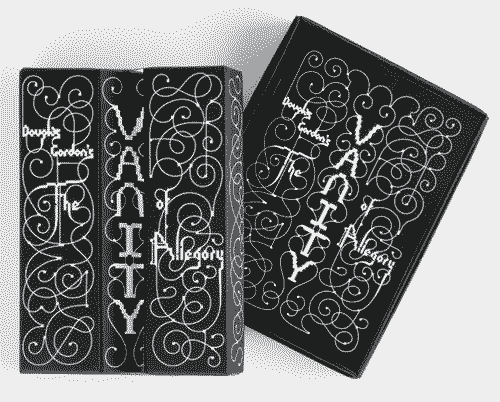
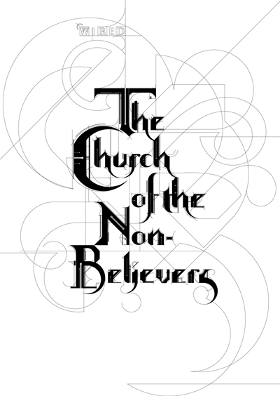
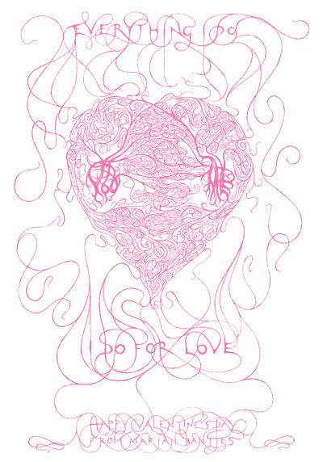
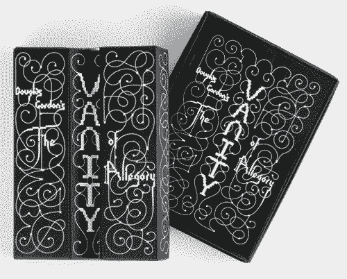
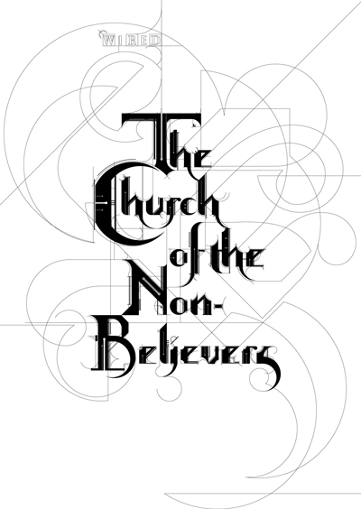
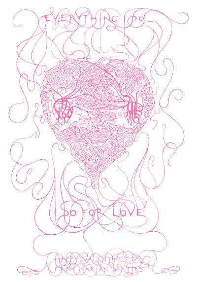

My thoughts and bibliography
Marian Bantjes shows a variety of colour, texture, materials and imaginative ideas throughout her works. I love her typography and illustration and think that is what draws people to her work. She explains in her book that “there is no formula to success: no way to say first you do this, the that, then this.”. To have started out an art college drop-out, Bantjes has produced many well known designs and illustration and worked with some of the best known designers of today.
1)Bantjes, M., Poynor, R. and Bantjes, M. (n.d.). Marian Bantjes. 1st ed. 2)Bantjes, M. (n.d.). I wonder. 1st ed. 3)https://www.ted.com/talks/marian_bantjes_intricate_beauty_by_design. (n.d.). [video]. 4)Marian Bantjes. (2017). About - Marian Bantjes. [online] Available at: http://bantjes.com/about/ [Accessed 21 Dec. 2016]. 5)Marian Bantjes. (2017). Church of the Non-Believers - Marian Bantjes. [online] Available at: http://bantjes.com/work/church-of-the-non-believers/ [Accessed 22 Dec. 2016]. 6)Marian Bantjes. (2017). Halloween '05 - -7)Marian Bantjes. [online] Available at: http://bantjes.com/work/halloween-05/[Accessed 21 Dec. 2016]. 8)Marian Bantjes. (2017). I Wonder - Marian -Bantjes. [hard-copy] [online] Available at: http://bantjes.com/work/i-wonder/ [Accessed 21 Dec. 2016]. 9)Marian Bantjes. (2017). Influences Map - -10)Marian Bantjes. [online] Available at: http://bantjes.com/work/influences-map/[Accessed 21 Dec. 2016]. 11)Marian Bantjes. (2017). Pretty Pictures - 13)Marian Bantjes. [hard-copy] Available at: http://bantjes.com/work/pretty-pictures/ [Accessed 18 Dec. 2016]. 14)Marian Bantjes. (2017). Saks Want It! - Marian Bantjes. [online] Available at: http://bantjes.com/work/saks-want-it/ [Accessed 21 Dec. 2016]. 14)Marian Bantjes. (2017). Seduction - Marian Bantjes. [online] Available at: http://bantjes.com/work/seduction/ [Accessed 7 Jan. 2017]. 15)Marian Bantjes. (2017). Speak Up T-Shirt - 16)Marian Bantjes. [online] Available at: http://bantjes.com/work/speak-up-t-shirt/ [Accessed 7 Jan. 2017]. 17)Marian Bantjes. (2017). The Vanity of Allegory - Marian Bantjes. [online] Available at: http://bantjes.com/work/the-vanity-of-allegory/ [Accessed 7 Jan. 2017]. 18)Marian Bantjes. (2017). Valentines 2005 - Marian Bantjes. [online] Available at: http://bantjes.com/work/valentines-2005/ [Accessed 7 Jan. 2017].

   
  